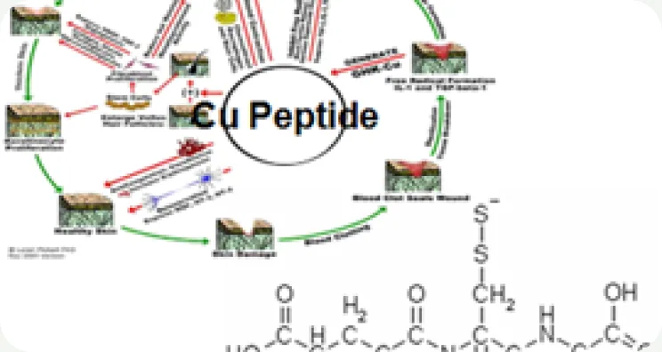
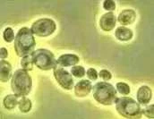
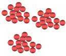
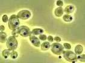
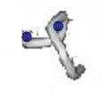

HOME
HOME- 원료소개
- 화장품원료
- Biopeptide Cu
Ingredient research
Biopeptide Cu
효모 발효 유래 구리 펩타이드
01 / Overview & Strengths
개요 & 특장점
- 효모를 특수 발효하여 추출한 구리 펩타이드 복합체입니다.
- 구리는 인체 근육조직의 재생에 가장 중요한 미량 영양소 입니다.
- Copper가 킬레이트 된 것으로 인체 내에서 물질이며, 피부세포의 성장인자로 작용하고 조직을 보호하며, 조직손상에 따른 염증을 막아줍니다.
- 기타 Mn, Ca, Pt, Au, Mg 등 다른 기타 금속 제품 제조 가능합니다.
※ 자세한 자료는 직접 문의 부탁드립니다.
Product features / Product Strengths
- 주름개선 효과
- 탄력강화 효과
- 탈모예방 효과
- 주름방지 효과

02 / Technical Information
기술 자료
원료 기본 규격 및 제품 카탈로그
- INCI Name
- Saccharomyces, Copper Ferment
- CAS No.
- 999999-57-9
- M.O.Q.
- 1KG
- Pack Size
- 1/5/10/20KG
- Appearance
- Liquid
- Dosage
- 1~10%
03 / Research Data
기타 데이터
Copper?
- 구리는 인체 조직의 회복에 가장 중요한 미량 영양소입니다.
- 에너지 생성에 필요한 Cytochrome C oxidase, 항산화 작용을 하는 Superoxide dismutase, 피부 엘라스틴과 콜라겐의 가교 결합을 돕는 Lysyl oxidase 등 여러 효소의 보조 인자입니다.
Biopeptide CuAnti-wrinkle & Moisturizing, Hair loss protection
- 주름 개선
- 보습
- 탈모 방지
Preparation of Biopeptides — 바이오펩타이드 제조 과정
-
효모 + 무기 미네랄 Saccharomyces + Inorganic Mn / Zn / Ca / Cu


-
배양 기술 Cultivation Tech.

-
효소 기술 → 유기 펩타이드 Enzyme Tech. → Organic peptide

-
Biopeptide Mn Saccharomyces (and) Manganese Ferment 항염 · 보습 (Anti-inflammation & Moisturizing)
- Biopeptide Zn Saccharomyces (and) Zinc Ferment 주름 개선 · 보습 · 피부 보호 (Anti-wrinkle, Moisturizing & Skin Protection) 원료 보기→
-
Biopeptide Ca Saccharomyces (and) Calcium Ferment 피부 재생 · 피부 보호 (Skin Regeneration & Skin Protection)
-
Biopeptide Cu현재 원료 Saccharomyces (and) Copper Ferment 주름 개선 · 보습 · 탈모 방지 (Anti-wrinkle & Moisturizing, Hair loss protection)
원료 품질 시험 항목 및 기준 · Biopeptide Cu 기준
- Appearance
- Light blue liquid
- Odor
- Characteristic odor
- Cu content
- 50~100ppm
- Solubility
- Water soluble
- Dosage
- 1 ~ 10 %